16 Chapter 16 — Video Understanding: Action Recognition, Spatio-Temporal
The 2026 recipe, the SoccerNet suite, and the measured gap between describing and deciding
16.1 Three Tasks, One Boundary
"What happened in this clip" is three different jobs: (1) action recognition — classify a short clip or moment into a predefined sport action; (2) temporal spotting — find when in a long video an action occurs; (3) retrieval — find similar moments to a query. All three have mature 2026 recipes. All three sit behind one boundary: video models describe what they see; the deterministic pipeline decides what happened. This chapter expands the action-recognition lineage, then measures the boundary with the book's own frames.
16.2 The 2026 Recipe: Frozen Foundation + Small Head
The lineage of video action recognition — 2D CNN plus temporal pooling, I3D, SlowFast, X3D, VideoMAE, InternVideo2 — is tabled and largely dormant on the training side (MMAction2/PySlowFast unmaintained). The 2026 recipe: frozen V-JEPA 2/2.1 features (MIT) + a small probe head. V-JEPA 2.1's dense per-patch features are temporally consistent, enabling detector-free player-region tracking and zone-activity maps. The head is a linear layer or single-attention probe trained on a few hundred labeled contacts; it cannot silently overfit a backbone you will never retrain.
Keep an honesty baseline: X3D-XS fine-tune (the old way) still works and is the comparison. Landmine: T-DEED — the 2024 spotting winner — is GPL-3.0: reproduce to learn, never ship.
16.2b Action Recognition: 2D CNN + Temporal Pooling
The simplest recipe is two stages: run a 2D image CNN on every frame, then pool the frame features across time. For a clip of T frames, each frame xt is encoded by a CNN into a feature vector ft = CNN(xt), and the clip-level prediction is y = g({f1...fT}). The temporal aggregator g is usually mean pooling, max pooling, an LSTM, or a shallow Transformer. Mean pooling is order-invariant: it answers "which action appears most often" but not "in which order." Max pooling captures the most salient frame but loses the build-up. A temporal attention layer learns to weight frames, yet it still operates on per-frame semantics and has no explicit motion representation.
Pickleball example: a 2-second clip from pb-003 containing a serve looks like a player behind the baseline, ball toss, and paddle contact. A 2D CNN sees each frame as a still photograph; the model can learn that baseline + ball + raised arm correlates with "serve," but it has no notion that the toss must precede the contact. If the same player stands still in a ready stance at the baseline, the frame-level CNN may still score high for "serve" because the spatial cues are present. Rugby league example: a tackle clip shows a defender closing on a ball-carrier, contact, and the carrier falling. Mean pooling smooths the aggression across the clip and may confuse a dominant tackle with a passive wrap because the static frame features of two bodies close together are similar. The baseline needs labels for every sport and every camera angle; a rugby-tackle head does not transfer to a pickleball serve.
Practitioner limit: 2D CNN + temporal pooling is cheap, fast, and easy to deploy, but it cannot model the order of sub-actions or the motion between frames. It is a useful baseline for clip-level classification when the action is visually obvious and the camera is fixed, but it is not a spotting model and it is not a decision model.
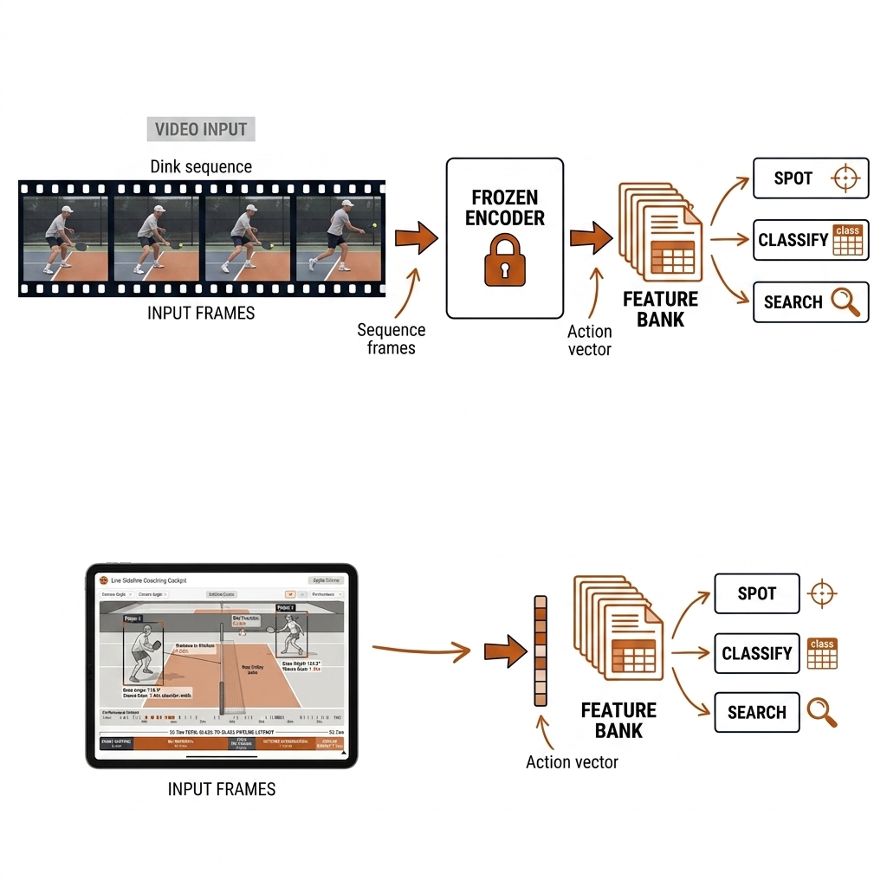
16.2c I3D: Inflating 2D Convolutions into 3D
I3D (Carreira & Zisserman, 2017, arXiv:1705.07750) asks a practical question: how do you train a 3D CNN when 3D video datasets are tiny compared to ImageNet? The answer is inflation: take a 2D convolution trained on images and repeat its weights across the time dimension, turning a 3 × 3 kernel into a 3 × 3 × 3 kernel. The model can then be fine-tuned on video with a much smaller motion dataset. The original I3D architecture also used a two-stream design: one stream ingests RGB frames, the other ingests dense optical flow, and the two are averaged at prediction time. The flow stream captures motion explicitly, which is exactly what sports need.
Pickleball example: a 3D convolutional tube over 64 frames can learn the wind-up of a serve, the ball toss, the below-waist paddle contact, and the low trajectory into the service box. The flow stream sees the hand-to-ball timing that distinguishes a serve from a return-of-serve. Rugby league example: the same tube captures the closing angle of a defender, the foot plant of the ball-carrier, and the abrupt deceleration at contact. The RGB stream sees body position; the flow stream sees the velocity change that marks the tackle. The approach is conceptually clean but operationally heavy: optical flow must be pre-computed, and the 3D convolutions consume memory quadratically with clip length.
Honest caveat: I3D and its variants need labels. A model trained on Kinetics-400 knows "swinging a baseball bat" and "kicking a soccer ball," but it does not know a pickleball dink or a rugby league play-the-ball unless you fine-tune it on those classes. The classes are sport-specific, and the taxonomy must be built before the model can be trained.
16.2d SlowFast: Two Temporal Pathways
SlowFast (Feichtenhofer et al., 2019, arXiv:1812.03982) splits the temporal problem into two pathways. The slow pathway runs at a low frame rate with high channel capacity — it learns semantics: court position, player pose, team shape. The fast pathway runs at a high frame rate with low channel capacity — it learns motion: paddle flick, footwork, ball flight. Lateral connections fuse fast motion cues into the slow semantic pathway at each stage. The insight is that semantics change slowly while motion changes quickly, so a single uniform frame rate is either wasteful or blind.
Pickleball example: the slow pathway sees that both players are at the kitchen line, bodies low, ready for a soft exchange. The fast pathway sees the abrupt paddle acceleration of a speed-up off a dink — the same low stance, but the motion signature changes the label from "dink" to "speed-up." Rugby league example: the slow pathway sees the defensive line compressed around the ruck area and the dummy-half standing at the PTB. The fast pathway sees the quick ball transfer or the dummy runner's change of direction. A pass that looks identical to an offload at the instant of release is distinguished by the fast pathway's capture of the preceding tackle pressure.
SlowFast is the canonical demonstration that sport action recognition is a spatio-temporal problem, not a frame-recognition problem. The slow/fast split is also the ancestor of the 2026 recipe: V-JEPA 2.1's dense features preserve both spatial structure and temporal coherence in a single frozen encoder, but the design intuition — separate the stable scene from the fast motion — remains the same.
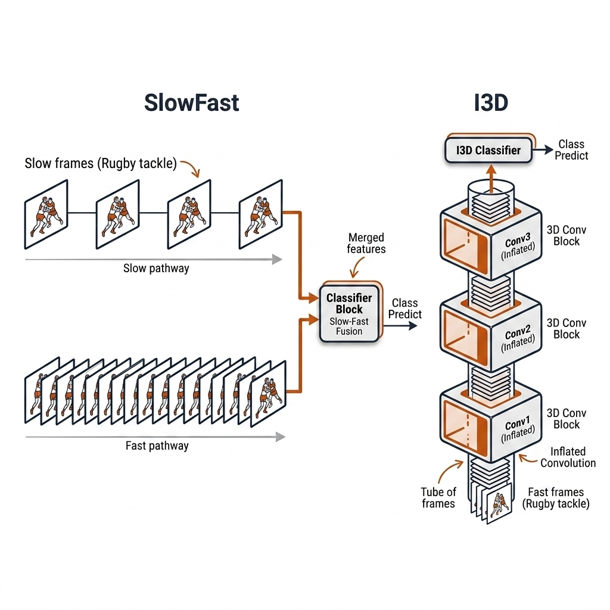
16.2e VideoMAE: Masked Autoencoding for Video
VideoMAE (NeurIPS 2022, arXiv:2203.12602) and its successor VideoMAEv2 bring self-supervised learning to video. Instead of labels, the model masks random space-time tubes in the input and learns to reconstruct the missing pixels. The encoder therefore learns a general representation of motion, object permanence, and human pose. A small classification head is then fine-tuned on labeled data. The promise is powerful: you can pre-train on thousands of hours of unlabeled broadcast sport and then fine-tune on a few hundred labeled contacts.
Pickleball example: pre-train VideoMAE on unlabeled pb-003 rallies, then fine-tune a linear head on 500 hand-labeled contacts for the 12-event taxonomy (§16.5). The model learns that a paddle is a rigid object, that the ball bounces, and that players move in pairs — priors that would take thousands of supervised labels to teach from scratch. Rugby league example: pre-train on broadcast NRL fixtures, then fine-tune on tackle, pass, kick, and PTB clips. The model learns the cadence of the six-tackle set before any human annotator marks a tackle.
2026 status: VideoMAE's upstream repository has been quiet since 2024, and V-JEPA 2/2.1 now reports better frozen-feature probing with no fine-tuning of the backbone. The lesson remains: self-supervised pre-training helps, but the head still needs labeled data, and the labels must be sport-specific.
16.3 Sport Event Spotting: The SoccerNet Suite
| 2026 Task | Coarse | Test |
|---|---|---|
| Player-Centric Ball Action Spotting (what + when + WHO) | 1s | mAP@1s — the tight tolerance |
| Ball Action Anticipation | future | mAP over horizons |
| Novel View Synthesis | — | PSNR/SSIM |
| SynLoc (single-frame world localization) | — | localization error |
| VQA | — | VQA accuracy |
Verified: 5 Codabench tracks (427 teams, 1,129 entries), data on Hugging Face. GSR (Game State Reconstruction) was dropped this cycle; the FIFA skeletal tracking initiative is adjacent and distinct [verify umbrella]. Tolerance matters: loose 5-60s windows are for highlights; 1s is for ball actions; dF1 is NOT a SoccerNet standard [verify — do not cite it as such].
Pickleball transfer: the same mAP@1s tolerance is the right metric for serve and paddle-ball contacts. Rugby league transfer: mAP@1s applies to tackle contacts, PTB completions, and kick contacts; the six-tackle set gives a natural horizon for anticipation.
16.4 Captioning and Foul Detection
SoccerNet-Caption (±15s windows, METEOR/CIDEr/BLEU, 471 games) and SCBench (5,775 clips, 6 sports, GPT-judged 6-dimension rubric — with judge-bias caveat). Book stance: captions render reviewed event rows; they never source them.
MVFoul (3,000+ multi-view clips) is the foul-detection reference with VARS aggregation. Rugby high-tackle detection is the welfare analogue (Bath 2025: 68% sensitivity / 84% specificity — the operating point is policy, not model default). Pickleball single-camera: review-support only, never automated calls.
16.5 The Taxonomies
The taxonomy work matters because it decides what spotting can even detect. A pickleball contact is a sub-frame event; a rugby league tackle is a 1-2 second contact interval. The vocabulary must be answerable from pixels and closed enough that every frame falls into a class or an explicit "unknown" bucket. The following two subsections close the pickleball and rugby league vocabularies used throughout the book.
16.5b The Pickleball Action Taxonomy
Pickleball is structured by the rally sequence: serve → return → third shot → kitchen exchange → finish. The book's 12-event closure is built from the PBN shot_phase and shot_type fields. The design principle is phase × type, not a flat label list: a third-shot drop is the conjunction (phase=third, type=drop), and a third-shot drive is (phase=third, type=drive).
| # | Event | Phase | Spotting cue |
|---|---|---|---|
| 1 | serve | point start | below-waist contact, feet behind baseline |
| 2 | return | point start | deep contact off serve, receiver behind/at baseline |
| 3 | third-shot drive | transition | hard flat contact from baseline after return |
| 4 | third-shot drop | transition | soft arc from baseline/transition, lands in kitchen |
| 5 | drive | rally | flat fast contact, any zone |
| 6 | drop | rally/transition | soft arc into kitchen from mid-court |
| 7 | dink | kitchen rally | soft contact at/near NVZ line, crosscourt or middle |
| 8 | reset | defense | absorbing pace from transition zone into kitchen |
| 9 | speed-up | kitchen rally | sudden fast contact off a dink pattern |
| 10 | volley | rally | contact out of the air, typically at NVZ |
| 11 | lob | rally | high arc over opponents, from kitchen or mid-court |
| 12 | overhead | attack | above-head contact on a high ball |
The implicit 13th class is unknown: between contacts, during body movements that are not shots, and in ambiguous cases, the model must say "I don't know" rather than force a guess. Unknown is not a missing label; it is the honest bucket that the review queue (chapter 19) consumes. A taxonomy without an unknown class is a taxonomy that will hallucinate.
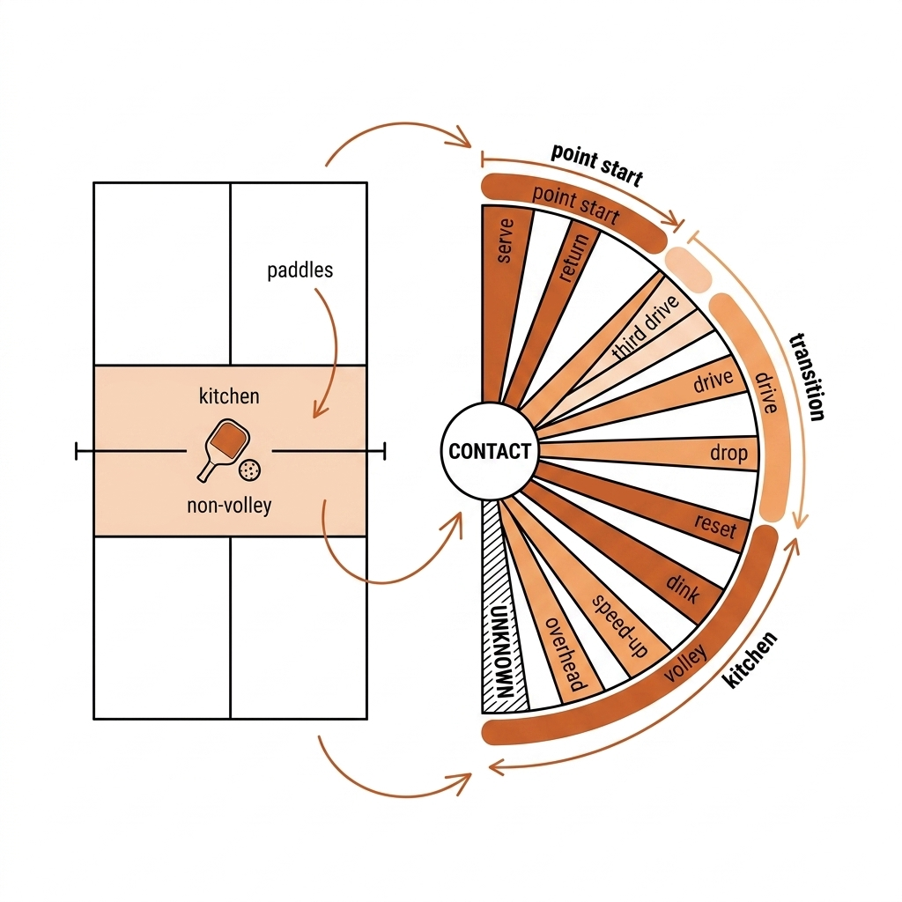
16.5c The Rugby League Action Taxonomy
Rugby league's event grammar is coarser than pickleball's and set-piece-structured around the six-tackle count. The basic cycle is: play-the-ball → carry or pass → tackle → play-the-ball. A kick branches off the sixth tackle, and a try ends the cycle.
| Event | Spotting cue | Chapter role |
|---|---|---|
| tackle | defender-ball-carrier contact, carrier to ground or held | welfare anchor (head-contact screening) |
| pass | lateral/backward ball flight between carriers | structured by PTB position |
| kick | foot contact: bomb / grubber / touch-finder / kick-off / conversion | special-teams layer |
| play-the-ball (PTB) | carrier rises, heels ball back, dummy-half collects | the metronome; resets position priors every ~10 s |
| ruck-area contest | bodies over the PTB, marker pressure | league's informal "ruck" — distinct from union's ruck |
| strip | defender dislodges ball in contact | turnover event |
| try | ball grounded in-goal | scoring event |
Welfare anchor: the Bath 2025 tackle study distinguishes head-contact tackle types at 68% sensitivity / 84% specificity (source-backed on the book's record; primary citation must be verified before print). The numbers are good enough to screen candidate head-contact tackles for human review and nowhere near good enough to adjudicate. The operating point is a policy decision, not a model default.
PTB timing is also a performance feature: ruck speed (PTB duration) is a standard league metric, so the spotting head's per-frame outputs feed a duration statistic directly. The taxonomy exists so that high-risk events can be surfaced, counted, and reviewed, and so that routine events can be turned into numbers coaches already consume.
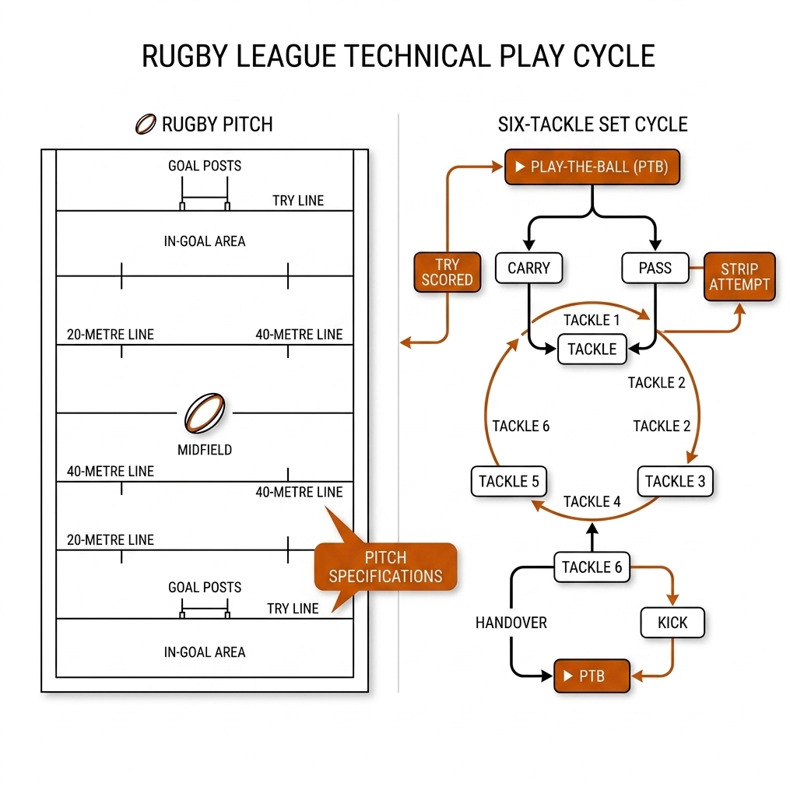
16.5d The Spatio-Temporal Problem
Action recognition is not image classification with extra frames. A single frame can be ambiguous because the action is defined by what happens across space and time. The spatio-temporal problem is: the same pose at one instant can belong to different actions depending on the preceding and following motion.
Pickleball case study: a drop and a dink can look identical at the instant of contact — a soft hit near the kitchen line. The difference is in the trajectory arc over the previous second: a drop travels from mid-court or baseline in a high arc, while a dink is a short arc from the kitchen line. Without the temporal window, a frame-level model will conflate them. Rugby league case study: a pass and an offload look identical at the instant the ball leaves the hands. The difference is the preceding tackle pressure: an offload is a pass executed while being tackled. A frame-level model sees two arms moving the ball; it does not see the defender arriving a quarter-second earlier.
This is why the 2D CNN + pooling baseline is only a baseline, and why architectures like I3D, SlowFast, and VideoMAE exist. They model the temporal structure explicitly. The 2026 recipe takes the same insight but freezes the temporal encoder and trains a small head, because the temporal encoder is now a foundation model rather than a per-task network.
16.5e The Temporal Window: Frames per Action
The length of the input clip is a model hyperparameter and a sport design choice. Too short and the model misses the wind-up; too long and it mixes multiple actions. The practical window for most sport actions is 2–4 seconds. At 30 fps, 2 seconds is 60 frames; 4 seconds is 120 frames. The 2026 default is often 64 frames at 30–32 fps (~2–2.1 seconds), which is long enough for a serve wind-up and short enough to avoid kitchen rallies.
Pickleball windows: a serve is well-contained in 2 seconds (toss to contact). A third-shot drop needs 3–4 seconds to show the arc from baseline to kitchen. A dink exchange is a sequence of contacts, so each individual dink is a 1–1.5 second window, but the exchange as a rally phase may be 4 seconds. Rugby league windows: a tackle is 1–2 seconds (defender commitment to ground contact). A PTB is 2–3 seconds (carrier rising, heel, dummy-half collect). A kick is 1.5–2 seconds (run-up to foot contact). The six-tackle set is a 40–60 second macro sequence, but the action taxonomy operates at the micro-event level.
Spotting uses overlapping windows with 50% stride to avoid missing a boundary. The SoccerNet mAP@1s tolerance then scores a prediction as correct if its timestamp falls within 1 second of a ground-truth contact. That tolerance is generous for a PTB but tight for a serve contact. The window design and the tolerance design must be chosen together.
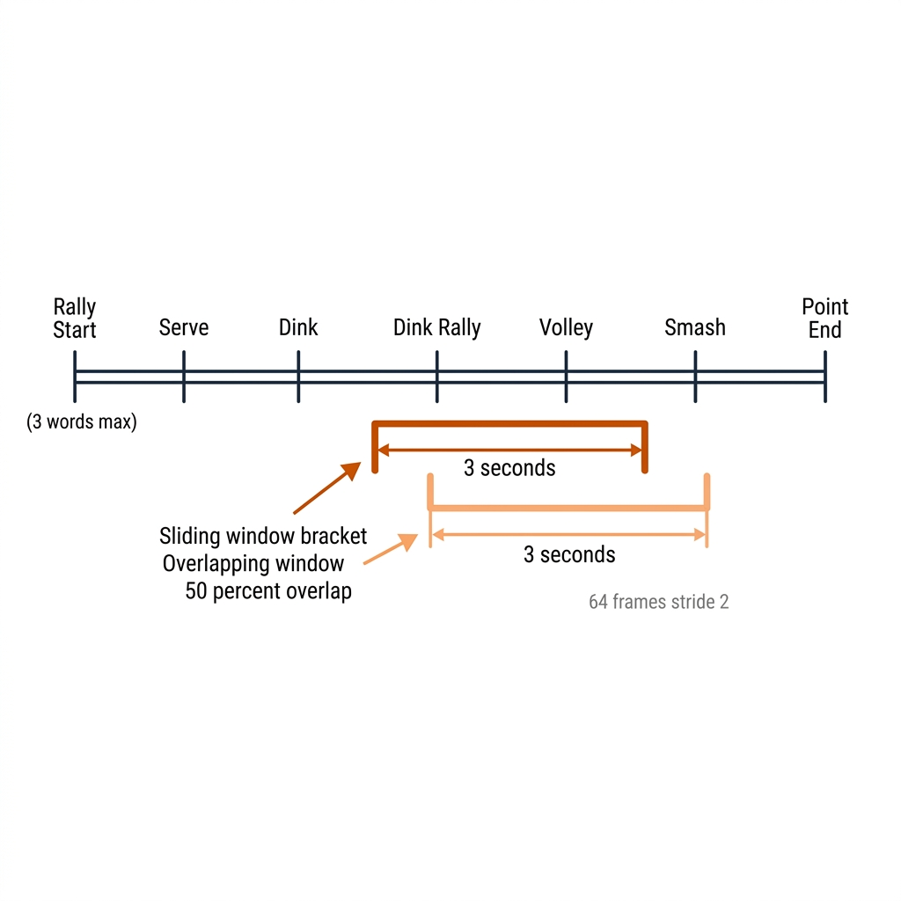
16.5f The VLM Alternative: When It Can (and Should) Answer
Vision-language models (VLMs) can answer natural-language questions about video. They are useful when the task is descriptive and the answer does not require precise geometry, identity, or timing. A VLM can say "the player at the kitchen line hits a soft shot toward the left corner" or "the fullback receives a long kick and runs it back." It can propose candidate labels for a human reviewer. It can caption a highlight reel. It should not decide whether the ball was in or out, whether a serve was legal, whether a tackle was high, or whether a contact was a drop versus a dink.
Pickleball example: a VLM can describe the shape of a rally, but it cannot reliably label a speed-up versus a volley at the contact frame because the difference is the sudden acceleration in the 200 ms before contact. Rugby league example: a VLM can narrate "the ball-carrier is tackled by two defenders," but it cannot judge whether the contact was shoulder-to-head without calibrated multi-view geometry and a policy threshold. The VLM is a generator of proposals, not a judge.
The boundary is quantified by two source-backed benchmarks. SportD (Aug 2026, arXiv:2607.14616) found that frontier VLMs pick the optimal on-ball action in 31.4% of decisions versus 38.9% for professional players. HourVideo found that Gemini 1.5 Pro scores 37.3% on hour-scale video understanding versus 85.0% for human experts. The gap is not a small calibration issue; it is a structural limit on description-versus-decision.
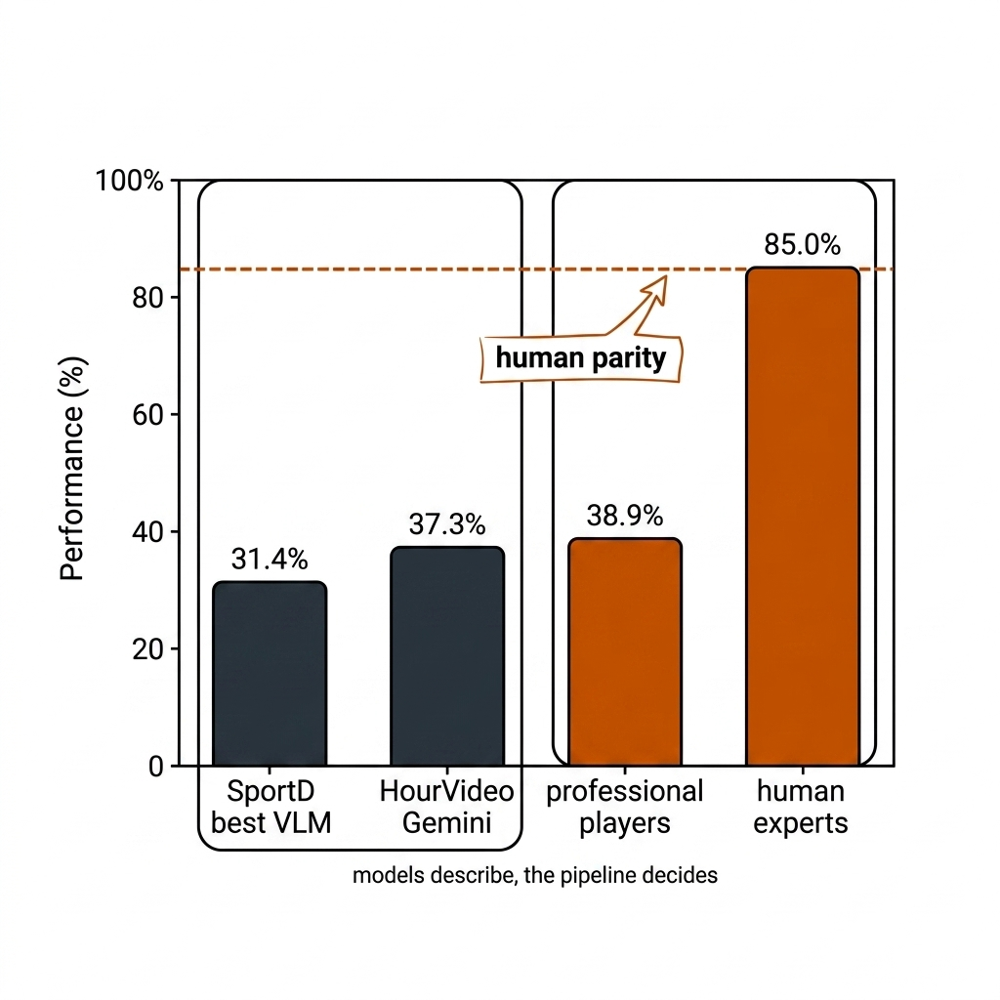
16.5g The Honest Benchmark: The C16 Lab
The chapter's own lab ran zero-shot retrieval on six golden-fixture frames from pb-003 using OpenCLIP ViT-B/32. The query was not a synthetic benchmark; it was the kind of question a coach would ask: "find all third-shot drops to the left corner" or "find the serve." The measured result is source-backed from experiments/c16-video-understanding/outputs/metrics.json.
| Query | Top score | Score spread across 6 frames | Verdict |
|---|---|---|---|
| "a serve from behind the baseline" | 0.300 | 0.288 – 0.300 | NO separation — every frame scores nearly the same |
| "a dink exchange at the kitchen line" | 0.229 | similar tight spread | NO separation — the query rank is meaningless |
The finding is blunt: zero-shot CLIP on real sports frames gives no discriminative signal for these action queries. A score of 0.300 is not "a little wrong"; it is the same score that every frame gets, which means the rank is random. Retrieval that works needs either a deterministic metadata filter first (PBN rows are the index), a fine-tuned embedding (V-JEPA probe), or exemplar-based retrieval. This is why the book's retrieval pattern is hybrid, never embedding-only.
The same measured failure transfers to rugby league. A query like "a dominant tackle in the defensive line" would return a narrow cosine band because all broadcast frames share the same grass, posts, and player shapes. The embedding sees the scene, not the action.
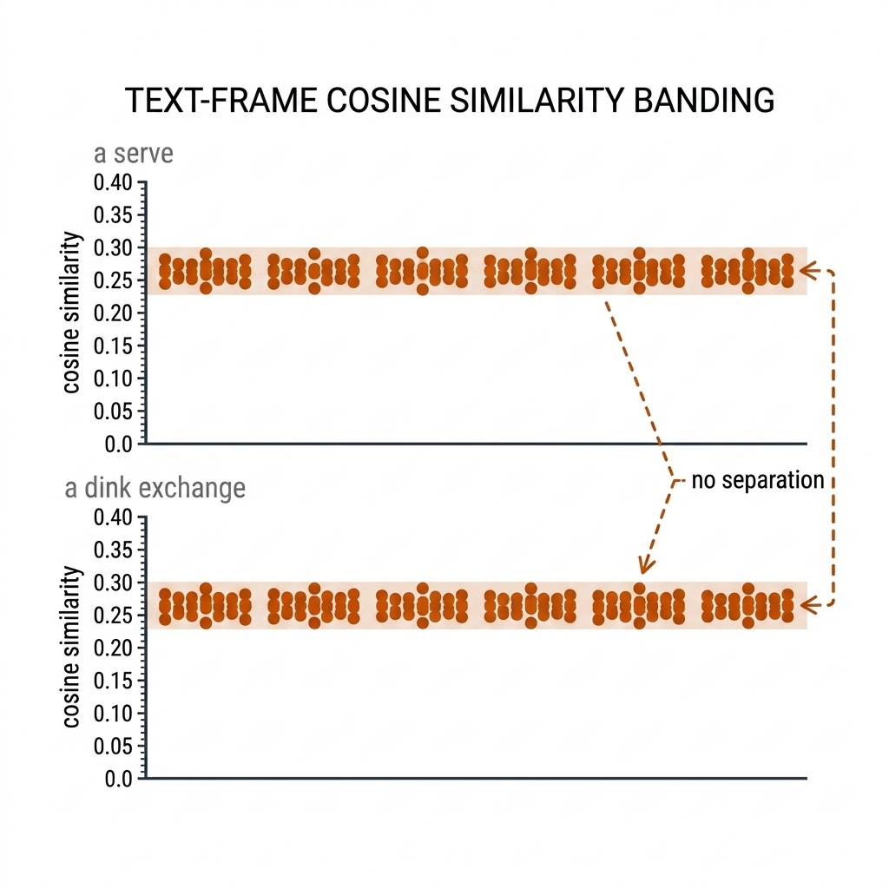
16.5h Limits and Landmines
Action recognition has hard limits that are easy to forget when the demos look good.
- Labels are sport-specific. A model trained on pickleball serves will not classify rugby kicks. The taxonomy must be built before the head, and the head must be trained per sport.
- Labels are scarce. VideoMAE and V-JEPA can pre-train on unlabeled video, but the downstream head still needs hundreds to thousands of labeled contacts. The 12-event pickleball taxonomy is a book construction; the PBN Data Dictionary's open
shot_typevalues are not yet closed. - Classes must be answerable from pixels. "Did the player intend to hit a drop?" is not answerable. "Was the contact soft and did the ball arc into the kitchen?" is answerable.
- Unknown is a class. Every taxonomy must include an explicit unknown bucket. A model forced to choose among 12 classes for a between-contact frame will hallucinate.
- Temporal window choices are model decisions. A 2-second window and a 4-second window are different models with different failure modes. Measure them separately.
- Tooling landmines. MMAction2 and PySlowFast are effectively dormant. T-DEED is GPL-3.0 and must not enter the product path.
16.6 Retrieval: The Hybrid Pattern (W3.7 Lab)
The engine is metadata PBN filter + embedding rank: "find all third-shot drops to left corner" decomposes into a deterministic WHERE (metadata) + cosine ORDER BY (embeddings). Infrastructure: LanceDB (Apache-2.0) over FAISS.
Our lab ran exactly this on the 6 golden fixtures with CLIP. The result is the chapter's evidence — and it says the embedding half alone is useless (§16.5g). The metadata half is what makes retrieval possible: PBN rows carry phase, type, and landing zone as filterable columns. The embedding ranks only within the candidates the metadata already returned.
16.7 The Describe-vs-Decide Boundary
Two verified numbers anchor the book's agentic architecture:
- SportD (Aug 2026): best frontier VLM picks the optimal on-ball action 31.4% vs 38.9% for professional players (478 World Cup 2022 decisions).
- HourVideo: Gemini 1.5 Pro scores 37.3% vs 85.0% human experts.
- SoccerLens: SOTA video-VLMs <50% grounding even when answers are correct.
Rule: models describe, the deterministic pipeline decides. A VLM can draft "this looks like a dink to the left corner"; the PBN state machine + track rows decide whether it happened. This is the generator-critic rule of chapter 25 applied to perception.
16.8 The Hybrid Retrieval Recipe (Copy This)
- Define the query as structured predicates first: "third-shot drop to the left corner" = {event_type: third_shot_drop, zone: left_corner} — this is a deterministic WHERE clause over PBN rows.
- Filter on metadata: the event table query returns a small candidate set (dozens, not thousands).
- Rank the candidates by embedding similarity (V-JEPA probe or fine-tuned CLIP — never zero-shot CLIP, per our measured 0.23-0.30 wash).
- Evidence-link: every candidate retains its clip path, frame index, and event row (chapter 5 spine).
- Human confirms: the analyst reviews the top-k; unreviewed cards stay hidden from decision use.
- Never emit an event from retrieval alone: retrieval is discovery; the C19 state machine is judgement.
16.9 What I Would Measure Next
- V-JEPA 2.1 probe on the pb-003 fixtures: does the dense-feature head separate action classes where CLIP failed?
- PBN-metadata + embedding hybrid: filter first, then rank — measure precision@10.
- X3D-XS fine-tune on the rally set (leave-one-rally-out) as the honest baseline.
- Temporal window ablation for pickleball serves (1 s vs 2 s vs 4 s) and rugby tackles (1 s vs 2 s).
16.9b The Ecosystem: What Sits Around the Recipe
The 2026 recipe is one line — frozen encoder, small head, tolerance-aware eval — but the working stack around it is a family of encoders, legacy trainers, and index infrastructure. The table is the shopping list with the sport use and the license flag per row; the landmines are marked, not hidden.
| Component | Role | License | Pickleball use | Rugby league use |
|---|---|---|---|---|
| V-JEPA 2 / 2.1 (Meta) | frozen encoder; 2.1 adds dense per-patch features | MIT | shot-head features; zone-activity maps on pb-003 | tackle/PTB head features on nrl-001 |
| OpenCLIP ViT-B/32 | text-aligned embedding (measured weak zero-shot, §16.5g) | MIT | hybrid retrieval ranker within PBN filters | same pattern on tackle/PTB rows |
| X3D-XS | honesty baseline fine-tune | Apache-2.0 | leave-one-rally-out baseline on shot clips | baseline on tackle clips |
| VideoMAE / v2 | masked-autoencoding pre-train lineage | MIT; repo quiet since 2024 | pre-train on unlabeled rallies | pre-train on broadcast fixtures |
| InternVideo2 | unified recognition + retrieval encoder | Apache-2.0 per checkpoint [verify NC wording] | candidate retrieval encoder | candidate retrieval encoder |
| SlowFast / PySlowFast | dual-pathway ancestor (UC 10) | Apache-2.0; frozen since ~2022 | baseline reproduction only | baseline reproduction only |
| MMAction2 | training framework | Apache-2.0; dormant | container-pinned baselines | container-pinned baselines |
| T-DEED | end-to-end spotting reference | GPL-3.0 — landmine | reproduce to learn; never ship | reproduce to learn; never ship |
| LanceDB | vector + metadata index (the hybrid engine) | Apache-2.0 | clip index with PBN filter columns | clip index with event filter columns |
| FAISS | raw vector engine / brute-force baseline | MIT | embedding rank fallback | embedding rank fallback |
16.9c The 10 Use Cases: Applied Framework
The use cases below are the applied bridge from the architectures above to the two sports. They follow three groups: A — Shot & Serve Classification (01-03), B — Collision-Cycle Events (04-07), and C — Sequence-Level Products (08-10). Each case pairs a pickleball and a rugby league application so the pipeline transfers, and each carries its evidence label: measured (book experiment), source-backed (paper), or [verify] (practitioner model, not yet established in literature).
Group A: Shot & Serve Classification (01-03)
UC 01 — Serve Classification and Legality Screening
The serve is the only closed-skill event in either sport: same start position, same cue sequence, every point. That makes it the cheapest classification win in the book and the natural first head to train. The problem a coach actually has: which serve type is a player hitting under pressure (drive, lob, drop serve), and is the motion legal — contact below the waist, paddle head below the wrist, feet behind the baseline.
Mechanism: contact-anchored 2-second windows (the §16.5e design) are encoded by the frozen V-JEPA 2 features f1...fT, pooled to z = meant(ft), and classified by a linear probe P(y | clip) = softmax(Wz) over {drive, lob, drop serve, fault, unknown}. Legality is not the softmax's job: it is a geometric predicate — contact height < waist, computed from the C06 homography feet and the C11 pose wrist/hip keypoints — attached to the classified row. E10's temporal-difference contact heuristic (0.814 precision, measured) supplies the anchor instants the windows are centered on.
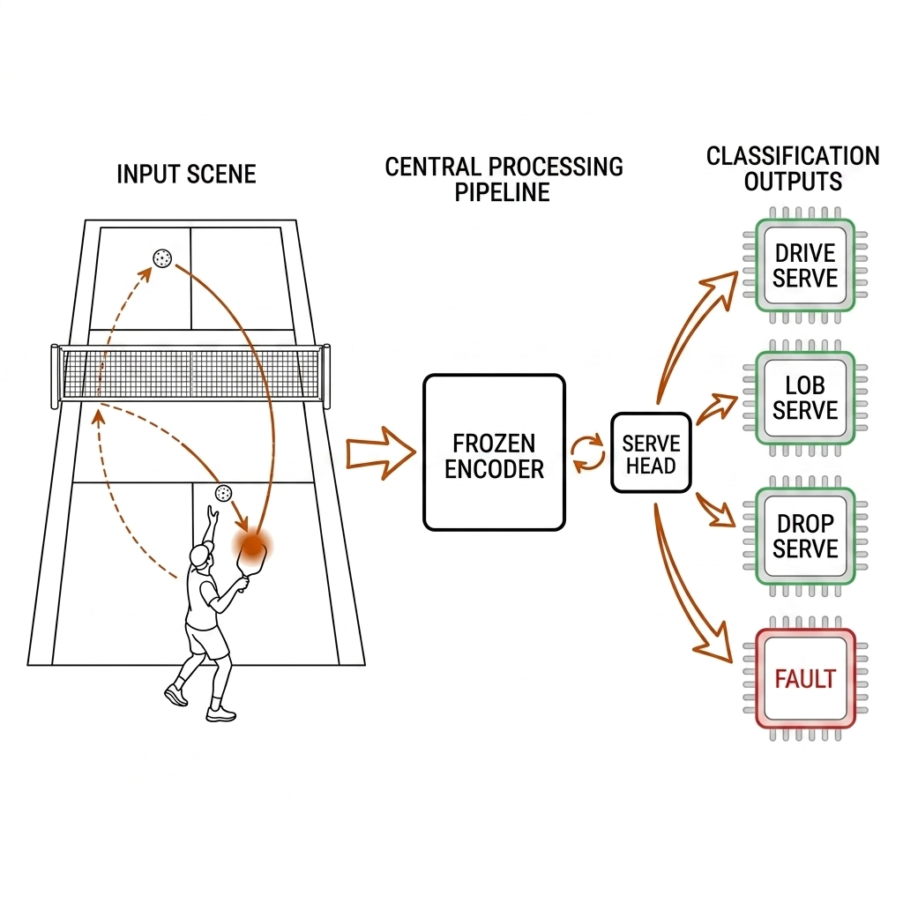
Payoff: coaching — a serve-type distribution per player replaces anecdote; officiating — legality clips surface for review instead of being adjudicated blind.
UC 02 — Shot Classification: Drive, Dink, Drop, Smash
Rally shots are the volume events of pickleball, and their labels are the input to everything downstream — the ΔEPV value model of chapter 22, the drill design of chapter 29, the retrieval index of §16.6. The problem: a frame-level model conflates the soft shots (§16.5d); the label lives in the arc before contact.
Mechanism: the head scores the phase × type conjunction from §16.5b rather than a flat label list: P(phase, type | clip) = P(phase | clip) · P(type | clip, phase), which shrinks the hypothesis space before the type decision. The type head consumes trajectory-arc features — pre-contact ball rise/fall and net clearance from the C12 ball track where visible (E04's ball wall: median confidence 0.1125, so pose and paddle motion carry the load when the ball is invisible) — resolving the drop-versus-dink confusion by the arc's origin zone. The implicit 13th class, unknown, absorbs between-contact frames.
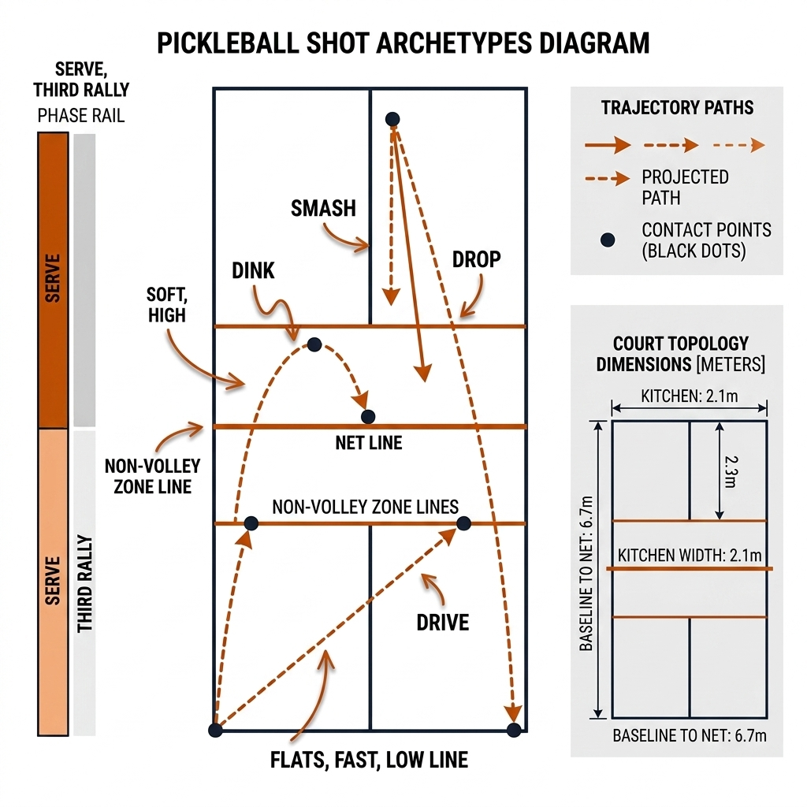
Payoff: tactical — shot distributions per rally phase are the raw material of the value model; every labeled contact compounds into C22 and C29.
UC 03 — Kitchen-Fault and Foul Classification
The NVZ foot fault is pickleball's highest-stakes adjudication target: a volley contacted while any part of the foot touches the kitchen line or zone. The practical problem is not calling it live — the book's single fixed camera cannot see every angle — but surfacing the right clips for review instead of asking a referee to scrub a full match.
Mechanism: a two-stage sieve. Stage one is the spotting head from UC 02 flagging volley contacts near the NVZ. Stage two is geometric: the C06 homography (E05/E11, 3.82–4.65 cm RMSE, measured) maps the contact-frame foot keypoints to court coordinates, and the predicate foot_y < NVZ_line scores the violation margin. The output row is a review candidate with the margin attached — never a call. This is the single-view analogue of MVFoul's VARS aggregation (§16.4): multi-view foul classification adjudicates; single-view foul classification triages.
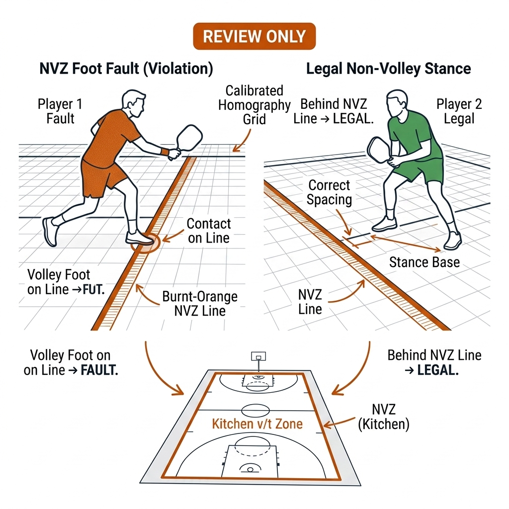
Payoff: officiating — referee time spent on the 2% of contacts that matter; the review queue (chapter 19) consumes what this head emits.
Group B: Collision-Cycle Events (04-07)
UC 04 — Tackle Detection
The tackle is rugby league's atomic event: it ends the carry, starts the ruck, resets the six-tackle count, and anchors the welfare screen. Missing tackles breaks every downstream statistic; hallucinating them poisons the count. The problem is that a tackle is a 1–2 second contact interval in dense occlusion, not a visible instant.
Mechanism: per-frame discriminability. The frozen features give a per-frame logit pt = σ(w · ft) for "tackle in progress"; an event is proposed where pt crosses a calibrated threshold, and temporal non-maximum suppression merges adjacent crossings into one timestamped interval. Scoring is mAP@1s (§16.3): a prediction is correct if its contact timestamp lands within 1 second of ground truth. The spotting cues the head learns — closing angle, contact deceleration, carrier to ground or held — are exactly the §16.2c flow-stream signals, now carried by the frozen encoder.
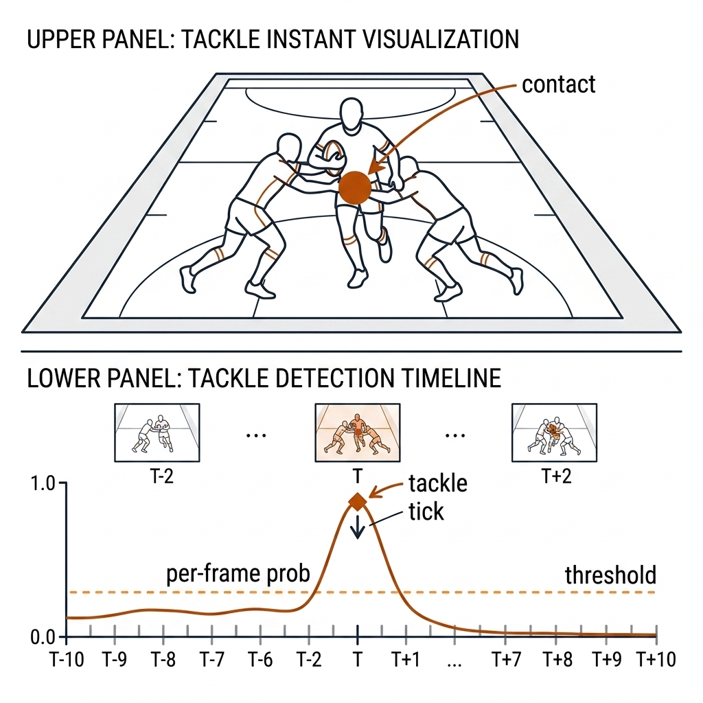
Payoff: statistical — the tackle count and burden numbers coaches already consume, produced without a human spotter; welfare — the contact rows UC 03's screen reads.
UC 05 — Ruck Start/End Detection
Between the tackle and the next play-the-ball completion sits the ruck: bodies over the ball, marker pressure, the carrier rising and heeling it back. Coaches measure this interval obsessively, and chapter 28's cockpit renders it live. The problem: neither its start nor its end has a clean visual instant — the ruck is a state, entered and left gradually.
Mechanism: change-point detection over the per-frame state probabilities. UC 04's head emits pt(ruck); the interval [ts, te] is the maximum-posterior binary segmentation of that sequence — the same penalty formulation as classic change-point detection, argmin over segmentations of the within-segment cost plus λ per boundary. The output is a start row and an end row with the duration Δt = te − ts, which is the PTB-timing statistic of UC 06 and the band input of C28.
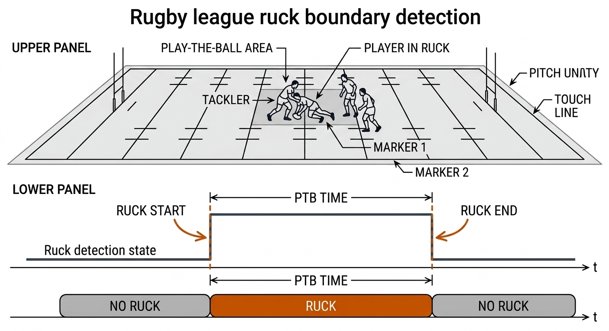
Payoff: tactical and live — the ruck-speed number arrives during the match, not after the video session; extends C28 without duplicating it.
UC 06 — Play-the-Ball Speed
Ruck speed — the duration from tackle completion to dummy-half collection — is one of the few statistics that predicts attacking success in league, and it is traditionally coded by hand. The problem is pure throughput: a season of matches is thousands of PTBs, and manual coding lags the fixture by days.
Mechanism: the duration statistic is read directly off UC 05's boundaries: PTB speed = Δt per event, aggregated per team, per ruck position, per tackle number. The practitioner playbook bands it green < 3.2s, amber, red > 4.0s [verify — coaching-standard bands, not a published benchmark]. Because the statistic is a difference of two spotted timestamps, its error is the sum of two spotting errors — which is why the mAP@1s tolerance of §16.3 propagates: at 1s tolerance per boundary, a duration is honest to roughly ±2s worst case, tight enough for band assignment, too loose for sub-second claims. Cluster-bootstrap by match (C20) gives the confidence intervals.
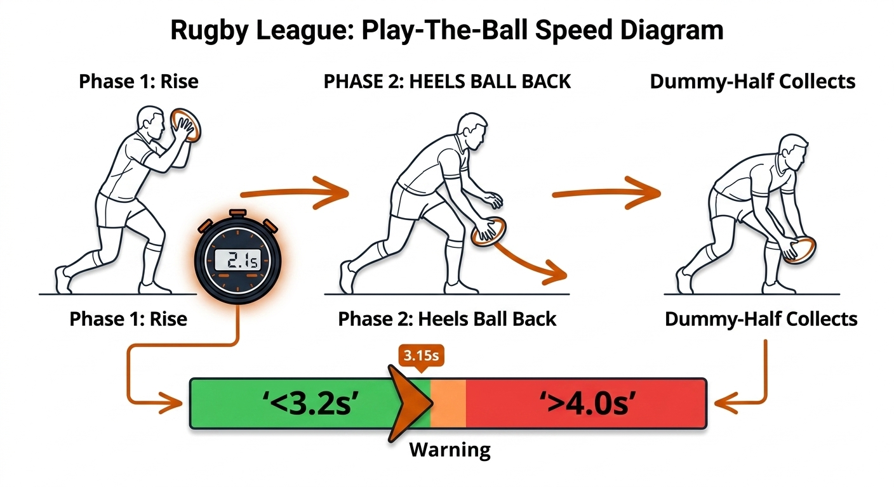
Payoff: performance — a hand-coded statistic becomes automatic and immediate; the band assignment is the number the coaching staff already speaks in.
UC 07 — Pass Detection and Direction
The pass is league's connective event: it moves the ball laterally and backward, and its count and direction structure the attack. The problem is that a pass and an offload are visually identical at release (§16.5d), and a forward pass is a rule violation — so the label must carry direction, not just occurrence.
Mechanism: the head pairs a spotting logit with a geometric direction test. Spotting proposes the release instant; the C12 ball track then gives the velocity vector v = (vx, vy) in the pitch frame, and the legality predicate is the sign of the play-direction component: vx ≤ 0 is backward or lateral, vx > 0 is a forward-pass candidate for review. Type (flat, cut-out, offload) is the phase × type conjunction of UC 02 conditioned on tackle pressure in the preceding window — the UC 04 head's output reused as a feature. Where the ball is lost (E04's wall applies to an oval ball too), hand-velocity from pose is the fallback signal.
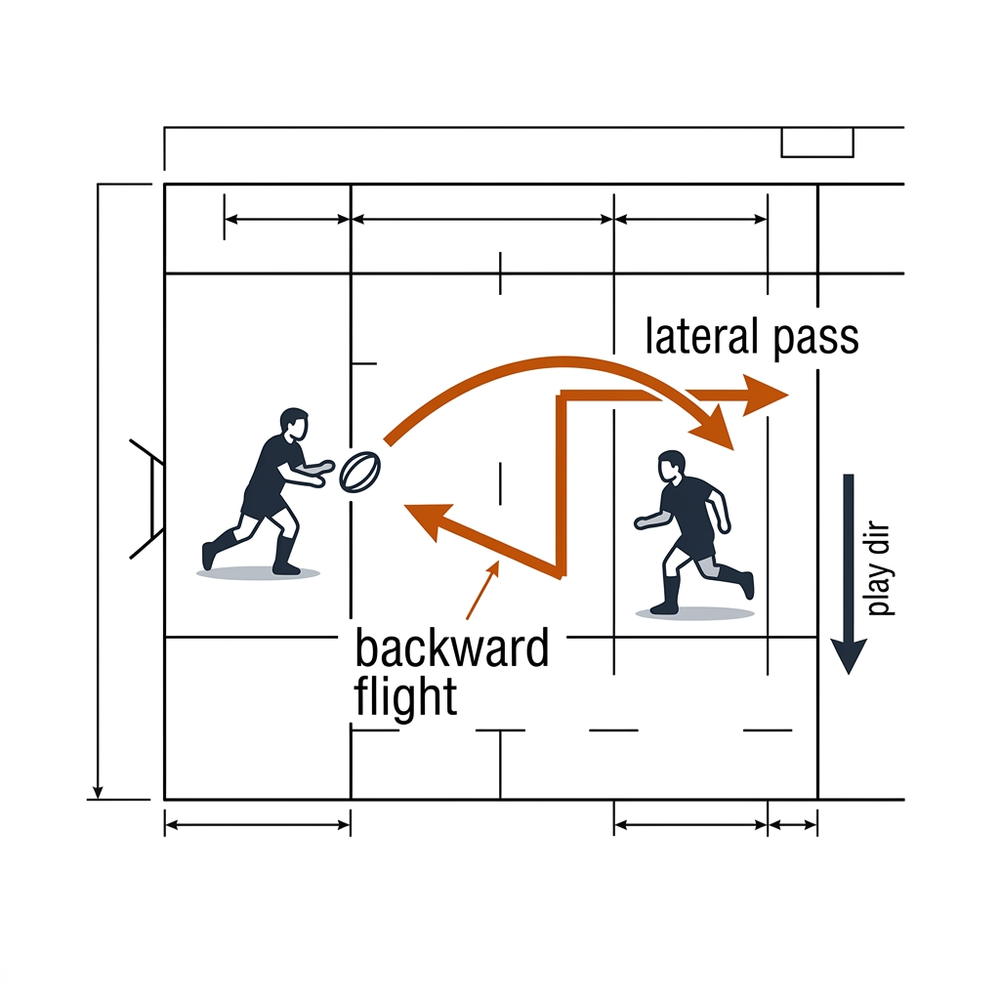
Payoff: tactical and officiating — attack shape statistics for coaches; forward-pass clips triaged for review with the direction margin attached.
Group C: Sequence-Level Products (08-10)
UC 08 — Highlight Extraction
Every downstream consumer — coach review, recruitment reels, the chapter 19 cards — wants the two minutes that matter from ninety minutes of footage. The problem is that "highlight" is a budget problem, not a detection problem: the events are already spotted; the question is which windows earn the reel.
Mechanism: score each spotted event window by rarity-weighted density, S(w) = Σe ∈ w −log P(class(e)) over the events in the window, then select the budgeted set: max Σ S(wi) subject to Σ duration(wi) ≤ B and non-overlap — a knapsack solved greedily or exactly at this scale. Rarity comes from the class priors the UC 01–07 heads themselves emit, so a speed-up off a dink pattern outranks a routine dink, and a try-scoring kick return outranks a midfield PTB. Unreviewed events are excluded by the chapter 5 evidence rule: retrieval is discovery, review is judgement.
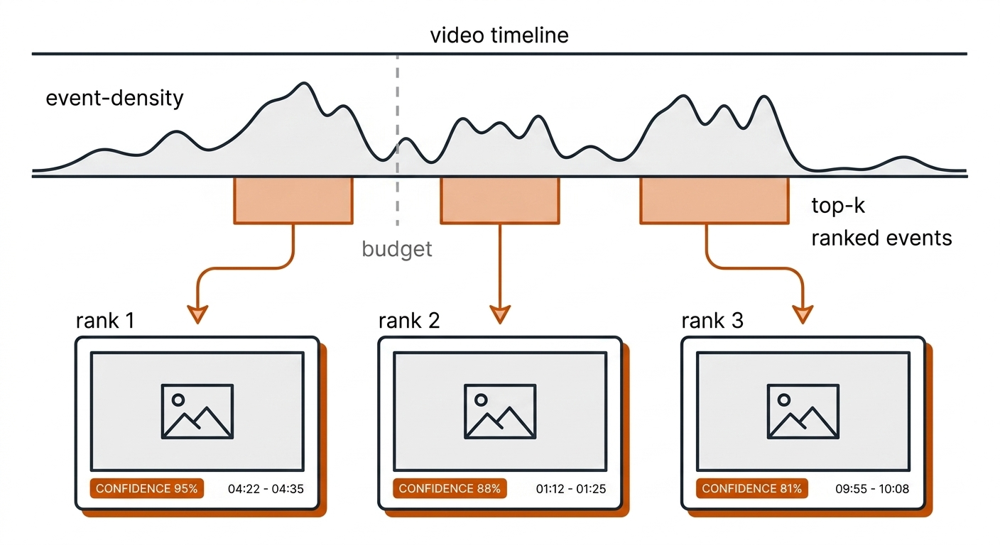
Payoff: analyst time — the review session starts at the reel, not at minute zero; every downstream consumer inherits ranked, evidence-linked clips.
UC 09 — Temporal-Window Tuning per Action
Section 16.5e set the default — 2–4 seconds, 50% stride — as a design principle. The applied problem is that the default is wrong per class: a serve is contained in 2 seconds, a third-shot drop is not, and a tackle sits in between. Training one window length for all classes bakes the mismatch into every head.
Mechanism: an ablation, not an architecture. For each action class, train the probe head at window w ∈ {1, 2, 4} s with the stride fixed at 50%, and score mAP@1s(w) per class on the labeled contacts, with leave-one-rally-out splits and C20's cluster bootstrap so the comparison is honest. The deliverable is a per-class window table — serve 2s, third-shot drop 3–4s, tackle 1–2s, PTB 2–3s (the §16.5e numbers, measured per sport rather than asserted) — and the deployment rule that the window is a class-level hyperparameter, not a model-level one. Overlapping windows with 50% stride keep boundary events detectable throughout.
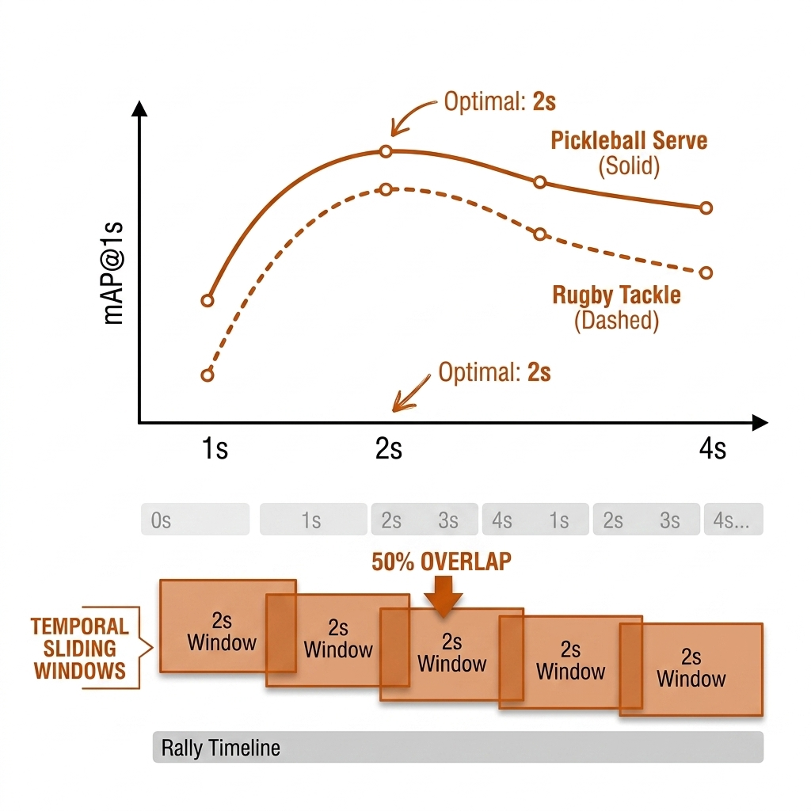
Payoff: model quality — per-class windows recover the accuracy a single global window throws away, at the cost of one extra ablation run.
UC 10 — Slow-Fast Fusion as the Deployment Pattern
SlowFast (§16.2d) is history as a training recipe, but its insight — semantics change slowly, motion changes quickly — is permanent. The applied problem: the frozen-encoder pipeline must still answer both kinds of question, "what is the scene" (court position, team shape) and "what just moved" (paddle flick, ball transfer), without paying for a second backbone.
Mechanism: sample the frozen features at two temporal rates over the same clip — a slow stream at frame stride α and a fast stream at full rate with a reduced feature width β — then fuse by the lateral connection pattern: z = zslow + W · zfast, with one head on the fused representation. This is SlowFast's lateral fusion (source-backed, arXiv:1812.03982) re-implemented as a feature-sampling choice on a frozen encoder rather than a two-branch network — V-JEPA 2.1's dense temporally consistent features are exactly what makes the cheap version possible. The speed-up-versus-dink case of §16.2d is the canonical test: identical slow stream, different fast stream.
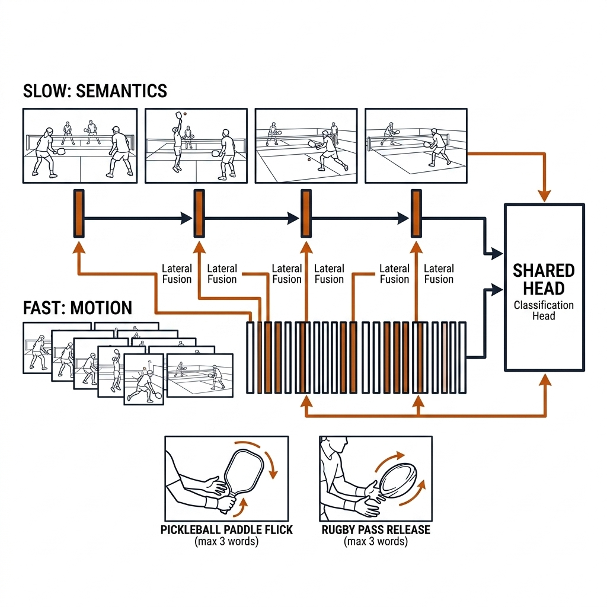
Payoff: deployment — one frozen encoder, one head, and the motion sensitivity of a two-branch network for the price of a second feature sampler.
16.9d Runnable Implementation
The minimal frozen-encoder action head — the skeleton every use case above shares — is a feature extractor run once per clip, a per-class probe head, and the tolerance-aware scorer. The full lab lives in experiments/c16-video-understanding:
import torch, torch.nn as nn
class FrozenActionHead(nn.Module):
"""V-JEPA 2 features (frozen) + per-class probe. Window is a class-level hyperparameter (UC 09)."""
def __init__(self, feat_dim=1024, classes=13, window_s=2.0, fps=30):
super().__init__()
self.encoder = load_vjepa2("vjepa2-vitl") # frozen, MIT
for p in self.encoder.parameters(): p.requires_grad = False
self.probe = nn.Linear(feat_dim, classes) # the product
self.T = int(window_s * fps) # 2s -> 60 frames
def forward(self, clip): # clip: [T, C, H, W]
with torch.no_grad():
f = self.encoder(clip) # [T, feat_dim]
z = f.mean(dim=0) # temporal mean pool (UC 01-02)
return self.probe(z) # logits over 12 events + unknown
def score_spotting(preds, truths, tolerance_s=1.0):
"""mAP@1s-style: a prediction is correct within tolerance of a ground-truth contact."""
hits = sum(1 for p in preds if any(abs(p - t) <= tolerance_s for t in truths))
return hits / max(len(truths), 1)16.9e What This Adds to the Pipeline
The ten use cases are not separate projects; they are the video-understanding layer applied across the book's verbs. UC 02's shot labels feed the C22 value model; UC 03's fault triage and UC 07's forward-pass candidates feed the C19 review queue; UC 04's contact spotting replaces the E10 heuristic as the anchor for every contact-based chapter; UC 05 and UC 06 feed the C28 cockpit's live PTB bands; UC 08's reels feed C19 cards and C29 practice design; UC 09 and UC 10 are the tuning and deployment patterns every head inherits. The honest labels mark what is measured in the book's lab (E10's 0.814 precision floor, the §16.5g CLIP wash), what is source-backed (SlowFast, I3D, mAP@1s, Bath 2025 pending primary citation), and what remains a practitioner model ([verify] serve sub-classes, PTB bands, per-class window table) awaiting the spotting labs of §16.9.
16.10 Sources
- SoccerNet 2026 suite (soccer-net.org; Codabench IDs; arXiv 2607.07320); MVFoul; SoccerNet-Caption; SCBench.
- V-JEPA 2/2.1 (MIT); T-DEED (GPL-3.0 — landmine); X3D/VideoMAE lineage; MMAction2 dormant.
- I3D: Carreira & Zisserman, arXiv:1705.07750; SlowFast: Feichtenhofer et al., arXiv:1812.03982; VideoMAE: arXiv:2203.12602.
- SportD (arXiv 2607.14616); HourVideo; SoccerLens — the describe-vs-decide numbers.
- Lab:
lab/w3_lab_video_understanding.py→experiments/c16-video-understanding/outputs/metrics.json(CLIP scores 0.23-0.30, no separation).